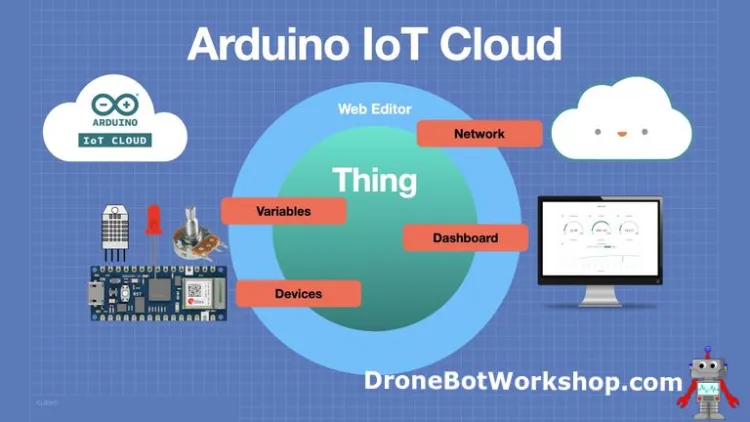
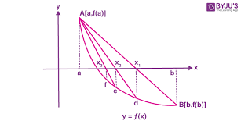
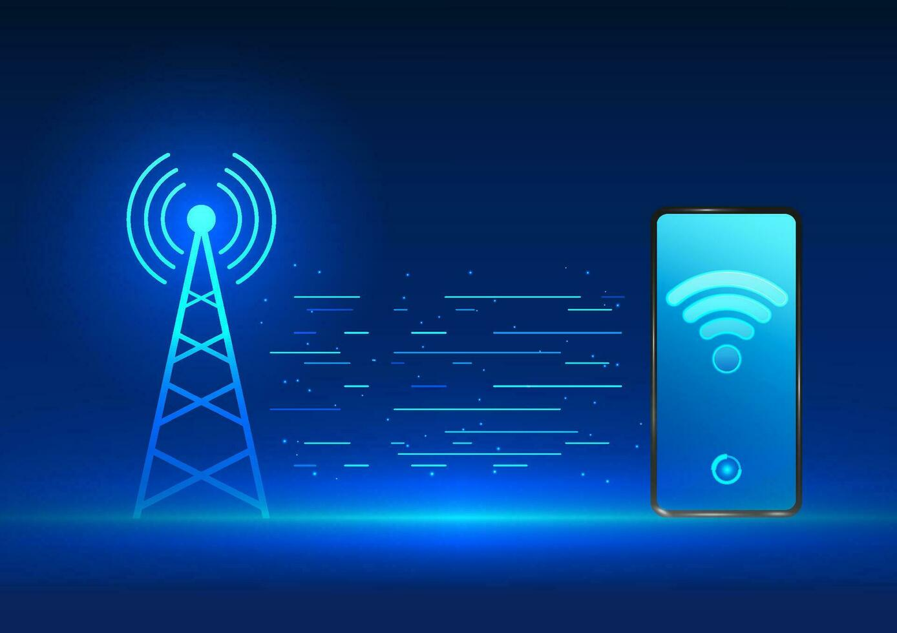
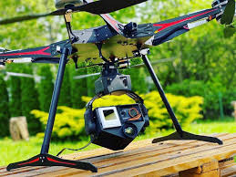
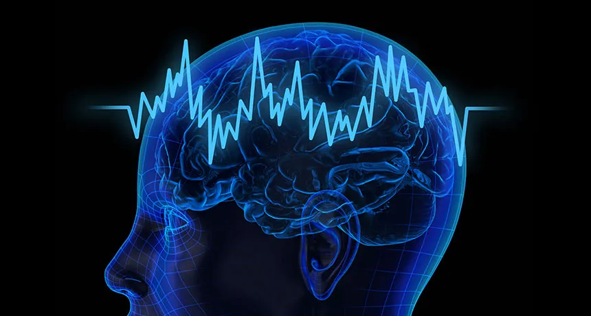
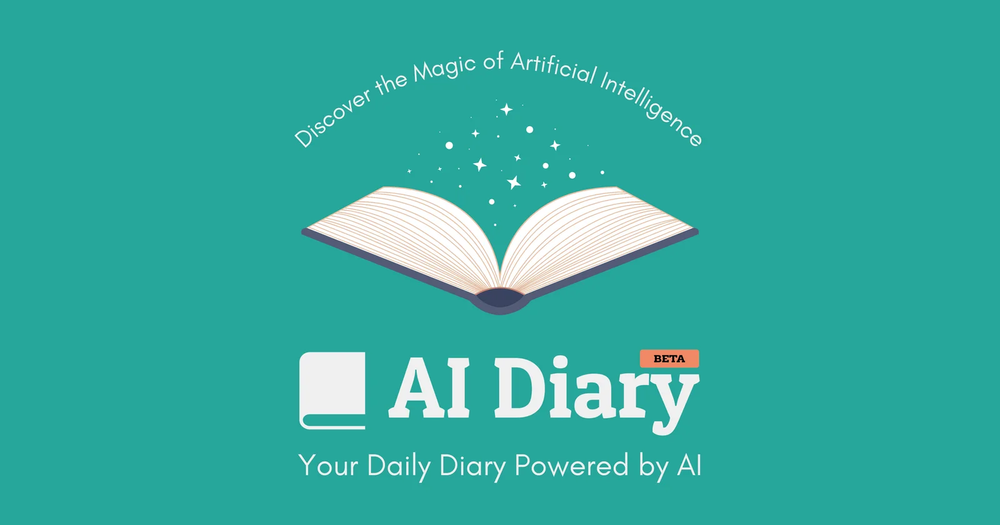

NAS Pendrive
Now-a-days data usage increses in our day to day life. Imagine having your own personal cloud that fits right in your pocket — that’s the power of a NAS Pendrive. A Network-Attached Storage (NAS) Pendrive combines the portability of a USB drive with the functionality of a NAS device, allowing users to access, share, and manage files over a network without relying on third-party cloud services.
With a NAS Pendrive, you can store your data securely and access it remotely from any device connected to the same network. Whether you're working on a collaborative project, backing up critical files, or streaming media across devices, this innovative solution offers convenience, speed, and control over your digital assets.
The NAS Pendrive is an ideal solution for students, professionals, and creators looking for an affordable, easy-to-use, and flexible storage option. As technology continues to evolve, this device bridges the gap between traditional USB drives and large-scale cloud services, empowering users to control their data without compromise.
Read more
Face Golden Ratio Check
Developed a Python-based tool that analyzes facial images to calculate their adherence to the golden ratio, providing a beauty score
out of 10. This project demonstrates proficiency in image processing and mathematical analysis.
Read more
Auto Image Compressor
I developed an Auto Image Compressor tool designed to simplify the image upload process. This tool automatically compresses images to under200 KB without compromising quality, making it perfect for online forms with strict size limits. Once compressed, the image is instantly uploaded to the form, eliminating the need for manual resizing or third-party apps. It’s a time-saving, seamless solution for users who frequently upload images for job applications, registrations, or documentation — ensuring they never struggle with file size restrictions again.
Read more

Regula Falsi Method website
Developed a web-based application implementing the Regula-Falsi (False Position) Method to find function roots.Users input a
function, initial guesses, and a tolerance value; the tool iteratively applies the method, displaying results in a table.
Read more

Mobile Signal Enhancement Devices: Stay Connected Anytime, Anywhere
In our daily lives, dropped calls and weak mobile signals can be frustrating, especially in remote areas or inside buildings with poor network coverage. This connectivity issue disrupts important conversations, delays tasks, and limits access to online services. To solve this, Mobile Signal Enhancement Device come to the rescue. These devices amplify weak signals, boosting network strength for seamless calls, faster internet, and reliable messaging. By capturing the existing signal, enhancing its power, and rebroadcasting it within a targeted area, these devices ensure consistent coverage, even in signal-dead zones. Whether at home, in the office, or on the go, signal enhancers provide a simple yet powerful solution to stay connected anytime, anywhere.
Read more

Pen Mouse: Conver your system screens into touch like sensors
Working on non-touchscreen devices often feels limiting, especially when trying to draw, design, or navigate with precision. Using a traditional mouse or trackpad can be frustrating for creative tasks or detailed edits. That’s where the Pen Mouse comes in — a sleek, handheld device that turns any normal screen into a touch-like experience. Acting like a stylus, the pen mouse allows users to point, click, and draw with natural hand movements, making interactions more intuitive. Unlike standard screens that require physical touch or expensive upgrades, a pen mouse uses motion sensors or wireless signals to simulate touch functionality, giving users the freedom to sketch, write, and navigate effortlessly. It bridges the gap between regular displays and touchscreens, offering an affordable and portable alternative for students, designers, and anyone seeking a more hands-on digital experience.
Read more
Smell Chip: Experience smell virtually
Imagine shopping for perfumes online or exploring fragrances through a screen, but never knowing how they truly smell until they arrive — sometimes not matching expectations. This gap between virtual browsing and real-life experience inspired the creation of the Smell Chip. This innovative device allows users to smell fragrances, like perfumes or scented products, virtually by generating a small, controlled amount of the desired scent. The chip uses micro-capsule technology to release precise scent molecules, replicating the original fragrance in tiny quantities, just enough for a quick check. It transforms ordinary devices into scent testers, bridging the sensory gap in online shopping and digital experiences. With a smell chip, users can "try before they buy," making scent exploration as easy and immersive as scrolling through a product catalog.
Read more

Automated Camera Switch Drone: A dynamic approach to capturing Drone shots
Capturing every angle of an event or object often requires multiple setups or constant manual adjustments, making it hard to get a complete view. To solve this, I’m designing an Automated Camera Switch Drone that helps users focus on a single subject from multiple directions effortlessly. This drone carries multiple cameras pointing in different directions, automatically switching between them to always capture the best angle. Whether tracking a moving object, recording dynamic events, or creating immersive video content, the drone intelligently selects the optimal camera view, eliminating the need for manual controls. It offers a seamless, 360-degree perspective, making it perfect for filmmakers, vloggers, researchers, and anyone looking to capture every detail from all sides with minimal effort.
Read more

AI-powered Neural Interpreter
Imagine being able to understand your thoughts directly through technology. This project is about an AI-powered Neural Interpreter, an innovative tool designed to decode brain activity and translate it into interpretable data. This device utilizes advanced artificial intelligence algorithms to analyze brain signals, offering insights into cognitive processes and potentially revolutionizing how we interact with machines.
Recent advancements have demonstrated the potential of AI in interpreting brain activity. For instance, researchers have developed systems capable of decoding visual representations from brain signals with remarkable temporal resolution
Additionally, AI algorithms have been used to reconstruct visual experiences by analyzing brain scans.
The AI-powered Neural Interpreter aims to build upon these developments, providing real-time interpretations of brain activity. This technology could have profound applications in various fields, including neuroscience research, brain-computer interfaces, and enhancing our understanding of human cognition.
Read more
HAPAY: Sit and Pay Your Bill From Your Table
Picture this: you finish a meal at a restaurant, and instead of waiting for the bill or handling cash, you simply scan a QR code, and everything is settled through an app. I’m designing an app that streamlines transactions between merchants and users, making payments seamless and hassle-free. Both users and merchants get a unique ID, and when they share it — via QR code, NFC, or a simple link — the merchant can instantly add the bill to the user’s account. The user then reviews and pays the amount directly in the app, with no need for physical bills, card swipes, or extra communication.
For example, in a restaurant, the server can generate the bill and link it to the user's account in seconds. The user scans a code at their table, views the itemized bill, and pays — all within the app. No waiting, no confusion. This system reduces errors, speeds up service, and enhances the dining experience. We can further expand the app with features like split bills, tipping options, transaction history, and personalized offers, creating a complete digital ecosystem for easy and secure payments.
Read more

AI DAIRY: The place you can store your emotions securely and get personal guidence.
Imagine this: You’ve had a long, exhausting day. Your mind is racing with thoughts — worries about your future, confusion over an important decision, and the weight of emotions you can’t quite into words. You grab your phone, open an app, and start writing.
As you pour your heart out, the app listens. It gently analyzes your words, detects your emotions, and offers thoughtful suggestions. Feeling anxious? It suggests mindfulness exercises. Torn between two decisions? It helps you list the pros and cons. Overwhelmed with self-doubt? It delivers an uplifting affirmation tailored to your feelings.
The Vision: An AI-powered personal diary that’s more than just a digital notebook. It becomes a silent companion, helping users not only document their days but also navigate life’s uncertainties. For young people facing the pressures of academics, careers, and personal growth, this tool could be a game-changer — providing mental clarity, emotional support, and a path forward.
Read more

gpt Model
Imagine this: You’re stuck on a complex math problem or struggling to understand a historical event. Instead of flipping through pages or browsing countless websites, you turn to an model trained on a vast library of textbooks. You ask your question, and the AI responds with clear, accurate explanations — just like a knowledgeable tutor.
The Vision: A ChatGPT model enriched with textbook metadata, designed to be an ultimate learning companion. Whether it's science, literature, or computer science, this AI can break down concepts, summarize chapters, and even provide practice questions to reinforce understanding.
Read more